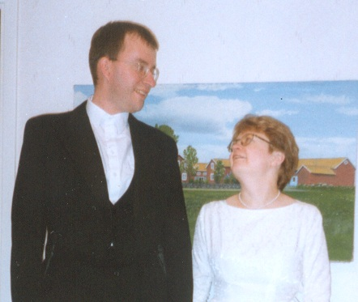
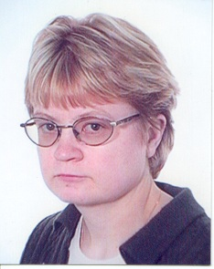

Gunnar Stefan Eliasson.

Född 1964-05-07 i Hålegården 1, Hägrunga, Algutstorp (P)
|
 |
|
Född
1969-07-29
i Mellomgården 2, Ornunga (P)
|
 |
|
Lena Margareta Claeson
Född 1969-07-29 i Mellomgården 2, Ornunga (P) |
F
Mats Adolf Jean Claeson.
Född 1929-03-17 i Mellomgården 2, Ornunga (P) Död 2019-12-17 i Kullingshemmet, Kullings-Skövde (P) |
FF
Ernst Rudolf Adolf Claesson.
Född 1896-12-23 i Almänningen, Lida, Nårunga (P) 1 . Död 1956-09-10 i Mellomgården 2, Ornunga (P) 1 . |
FFF Claes Samuel Emanuelsson. Född 1859 i Tämta (P) 2 . Död 1932 |
|
FFM Fredrika Johanna Åhman. Född 1860-07-21 i Västra 2 A+B, Boda, Vänga (P) 1 . Död 1932-08-01 i Almäningen, Nårunga (P) 1 . |
|||
|
FM
Elin Viktoria Jansdotter.
Född 1889-04-30 i Hökared, Ljur (P) 1 . Död 1969-05-21 i Mellomgården 2, Ornunga (P) 1 . |
FMF Janne Wilhelm Augustsson. Född 1859 i Ljur (P) 3 . |
||
|
FMM Matilda Andersdotter. Född 1858 i Nårunga (P) 3 . Död mellan 1936 och 1937 |
|||
|
M
Gunvor Ella Margareta Pettersson (Hallenbert) Claesson.
Född 1935-05-27 i Skjutshagen, Ornunga (P) Död 2023-06-02 i Vårgårda 4 . |
MF
Johan Viktor Rudolf Pettersson.
Född 1889-05-04 i Skjutshagen, Ornunga (P) 5 . Död 1972 i Skjutshagen, Ornunga (P) |
MFF Alexander Pettersson. Född 1857-12-11 i Västergården, Gundlered, Ljur (P) 5 . Död 1932 i Skjutshagen, Ornunga (P) 5 . |
|
|
MFM Eva Charlotta Johansdotter. Född 1854-09-04 i Skjutshagen, Ornunga (P) 5 . |
|||
|
MM
Signe Hilma Viktoria Andersson.
Född 1895-01-13 i Bergsgården, Ornunga (P) 5 . Död 1957 i Skjutshagen, Ornunga (P) 6 . |
MMF Johan August Andersson. Född 1856 i Högabacka, Ornunga (P) 6 . Död 1927 7 . |
||
|
MMM Hilma Fredrika Andersdotter. Född 1861 i Asklanda (P) 6 . Död 1923 i Ornunga (P) 6 . |
|
Gift
2000-08-12
i Ornunga Nya Kyrka, Ornunga (P)
Gunnar Stefan Eliasson.
Född 1964-05-07 i Hålegården 1, Hägrunga, Algutstorp (P) |
|
Framställd 2026-03-14 med hjälp av Disgen version 2025.